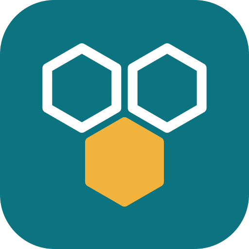

Delegate in plain words
The Lead proposes a team (roles, models, budget). Approve and it starts — no terminal juggling.

HivelaneTell the Lead AI what you need. It puts together a team — PM, developer, QA — out of Claude Code and Codex agents. Teams work in parallel in their own git worktrees, and you only step in when a decision is needed.
Free & open source (MIT) · macOS on Apple silicon · uses your existing Claude / ChatGPT subscription

The Lead proposes a team (roles, models, budget). Approve and it starts — no terminal juggling.
Each task gets its own branch and worktree. Watch plan → build → check → report, live.
Questions land in one Inbox with answer buttons. Production DB and deploy commands always need your approval.
The Lead engine watches CPU and memory, pauses and resumes teams, and queues heavy builds.
Mix Claude and Codex accounts per role. When one account hits its limit, it switches — and the conversation continues.
Messenger-style web UI with push notifications, reachable only inside your own Tailscale network.


| Claude Code alone | Parallel-session apps | Cloud agents | Hivelane | |
|---|---|---|---|---|
| Who splits the work | You | You, per session | You, per task | Lead AI proposes teams |
| Roles inside a task | One agent | One agent per session | One agent | PM delegates to dev / QA / reviewer |
| Mac load control | — | Mostly none | n/a | Pause/resume by CPU & memory |
| Usage limit hit | Wait | Wait or switch manually | Plan-based | Auto-switch account, same conversation |
| Code & data | Your Mac | Your Mac | Cloud | Your Mac |
Summarised from public material as of November 2026; other tools may have changed.
brew tap webjihong/hivelane https://github.com/webjihong/hivelane
brew install --cask hivelane
# later, to update
brew upgrade --cask hivelaneAfter an update the server switches to the new version by itself once no team is working.
Download the latest DMG, drag Hivelane to Applications, open it and click Install server and start.
The app is not notarized yet, so the first launch needs System Settings › Privacy & Security › Open Anyway. Homebrew installs skip this step.